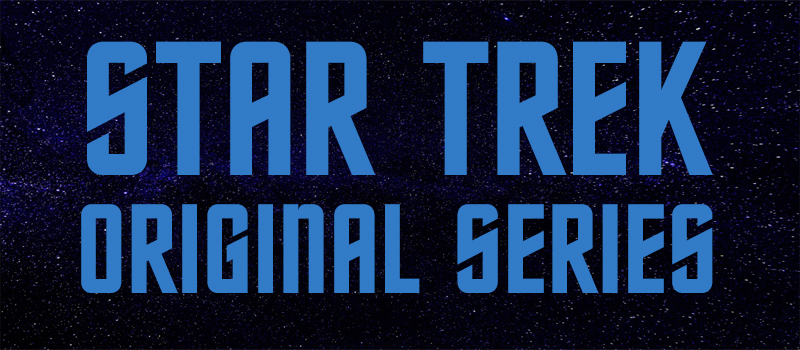
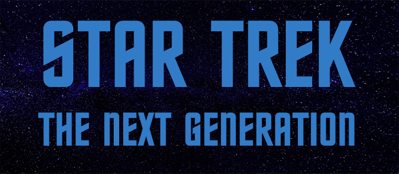
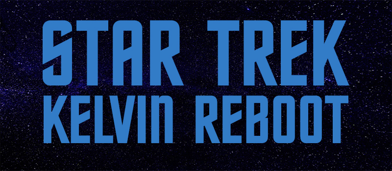

In the 24th century and beyond ...
Paramount Pictures has produced thirteen Star Trek feature films, the most recent being released in July 2016. The first six films continue the adventures of the cast of the original series; the seventh film, Generations was designed as a transition from that cast to the cast of the Next Generation series; the next three films, 8 -10, focused completely on the cast of the Next Generation series. The eleventh, twelfth, and thirteenth films take place in an alternate timeline, officially known as the Kelvin Timeline, with a new cast playing younger versions of the original series characters and Leonard Nimoy portraying an elderly Spock.
The Three Movie Series
The first television series, simply called Star Trek and now referred to as The Original Series, debuted in 1966 and aired for three seasons on NBC. The Star Trek canon includes the original series, seven spin-off television series, three animated series, and thirteen films.
The Original Series
The original cast of the TV series returned to the big screen for six movies.
- Star Trek: The Motion Picture (1979)
- Star Trek II: The Wrath of Khan (1982)
- Star Trek III: The Search for Spock (1984)
- Star Trek IV: The Voyage Home (1986)
- Star Trek V: The Final Frontier (1989)
- Star Trek VI: The Undiscovered Country (1991)
Read more on the The Original Series page.
The Next Generation
The cast of The Next Generation TV series returned to the big screen for four movies.
- Star Trek Generations (1994)
- Star Trek: First Contact (1996)
- Star Trek: Insurrection (1998)
- Star Trek: Nemesis (2002)
Read more on the The Next Generation Series page.
Kelvin Reboot
The Kelvin Timeline, with a new cast playing younger versions of the original series characters and Leonard Nimoy portraying an elderly Spock.
- Star Trek
- Star Trek Beyond
- Star Trek Into Darkness
Read more on the The Kelvin Reboot Series page.
Star Trek History
Star Trek is an American media franchise based on the science fiction television series created by Gene Roddenberry. The first television series, simply called Star Trek and now referred to as The Original Series, debuted in 1966 and aired for three seasons on NBC. The Star Trek canon includes the original series, seven spin-off television series, three animated series, and thirteen films.
In addition to Star Trek, and Star Trek The Next Generation, there were several spinoff series including:
- Deep Space Nine
- Voyager
- Enterprise
- Discovery